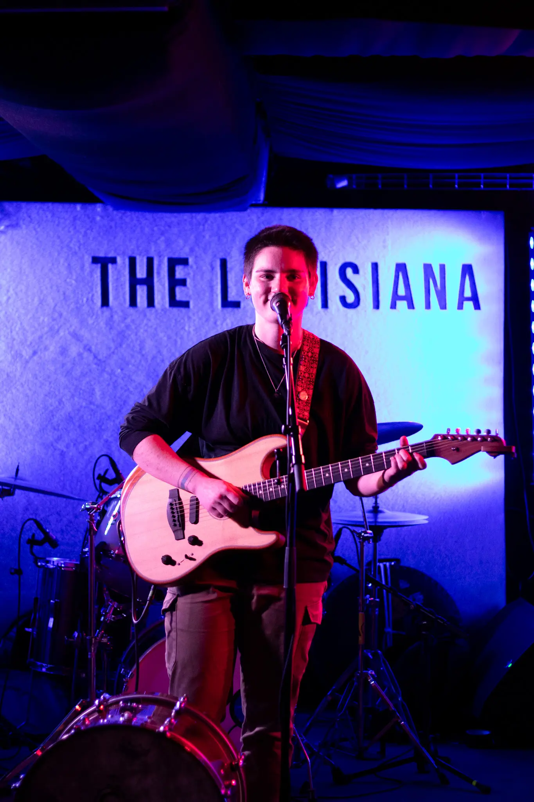
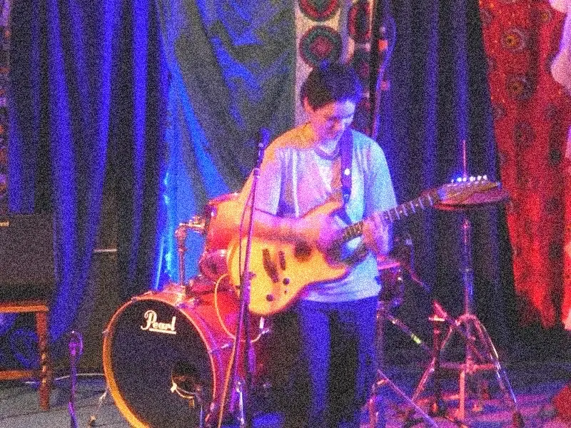
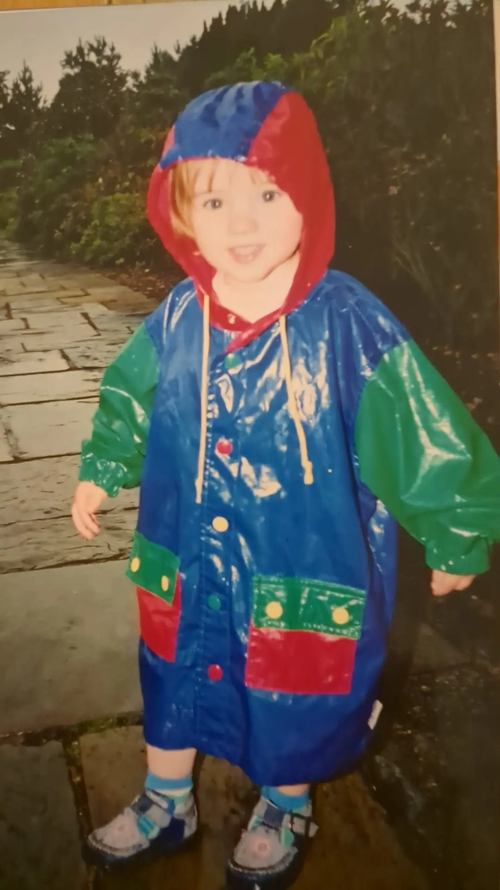
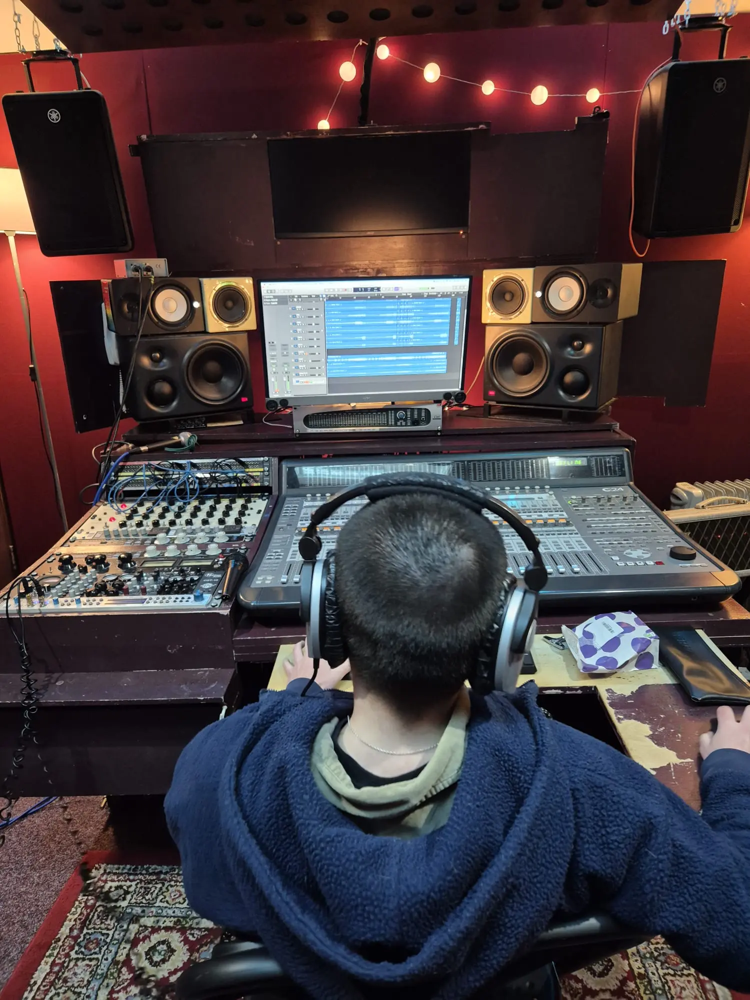
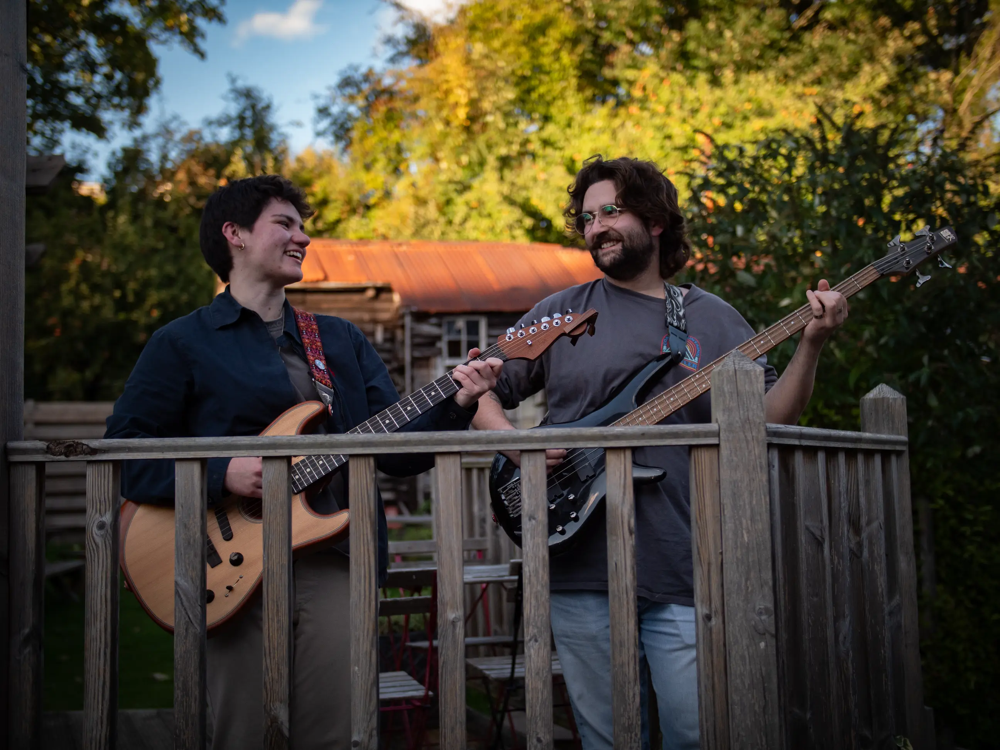
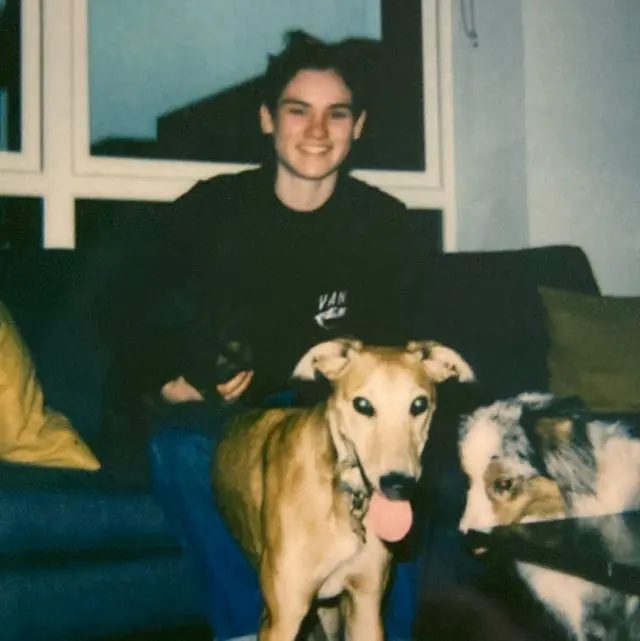

LOGO.IMG

The Human Orchestra of the Underground
MARCH 2026 // WALES
MARCH 2026 // WALES
VIEWER.EXE
Ready. Executing fetch_dates... [OK]
_
Saphi doesn't just play a set; she builds a world from scratch. A multi-instrumentalist powerhouse, Saphi's live show is a masterclass in controlled chaos.
Armed with a guitar, bass, synths, and a drum pad, she weaves intricate layers of electronic pop in real-time, turning the stage into a high-voltage laboratory.
Influenced by the psych-grooves of Tame Impala and the gritty, dance-floor hedonism of the Fcuckers, Saphi's sound is a fusion of chic production and raw, cathartic performance.
It's music for the "main character" moments—where introspective songwriting meets a massive party vibe.
Whether it's the pulse of the daily grind or the peak of a 2:00 AM strobe-lit floor, Saphi is the soundtrack.
Follow the latest.
Elevated atmospheres for timeless moments.
Collaboration - making music for other people.







